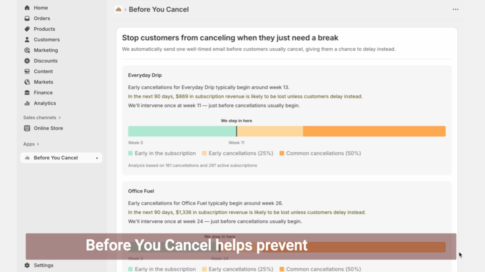
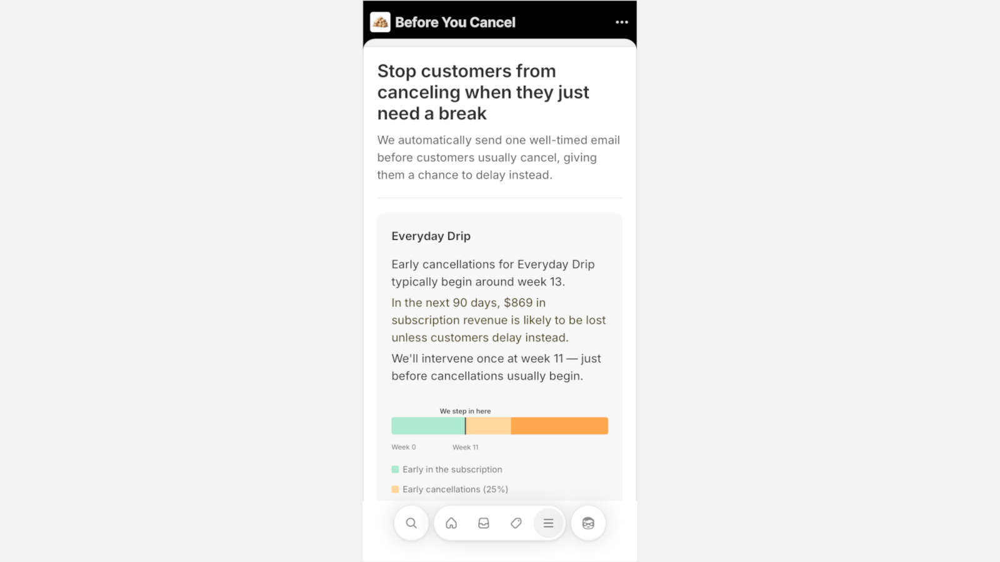
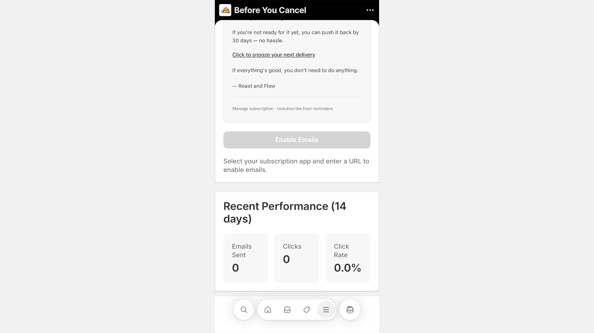

See it in action

Product-level churn analysis

Email setup and customization

Track saved cancellations




Before You Cancel is a Shopify app that helps subscription brands reduce churn by offering customers a smarter option at the moment they try to cancel: delay instead of cancel.
Fewer cancellations. Fewer support tickets. More retained revenue — without discounts.
Install on Shopify — Free 14-day trialMost customers don't cancel because they're done forever.
They cancel because:
When the only option is Cancel, that's what they choose — even when delay would have solved the problem.
Before You Cancel adds a Delay delivery option directly into your existing cancellation flow.
When a subscriber clicks "Cancel", they're first offered a simple alternative:
You keep the customer.
They avoid an unwanted cancellation.
Product-level churn analysis
Email setup and customization
Track saved cancellations
Before You Cancel is a native Shopify app designed specifically for stores running subscriptions.
You control when and how the delay option appears.
"I want to reduce churn without hurting the customer experience."
Before You Cancel helps you:
This is churn prevention that works with customer intent, not against it.
You'll always know where you stand — and you'll be notified before any plan change.
Starts at $49/month after a free 14-day trial.
Your plan includes a set number of active subscriptions, so you only upgrade when your business grows.
No surprise charges.
No silent upgrades.
Install Before You Cancel from the Shopify App Store and start saving cancellations today.
Install on Shopify — Free 14-day trial